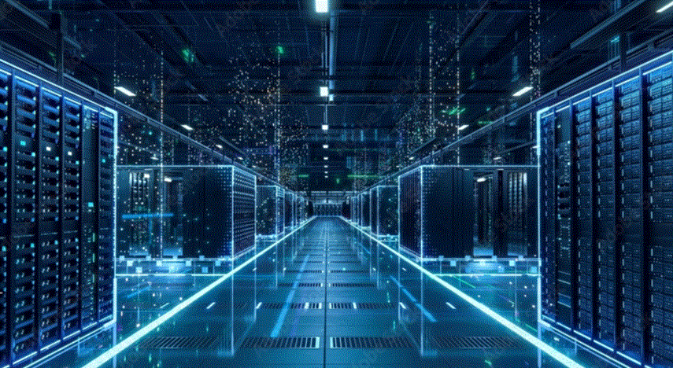

Infrastructure

Beschrijving
Deze specialisatie richt zich op het opzetten en beheren van IT-infrastructuren. Ik werk met Linux en Windows Server om stabiele en betrouwbare systemen te bouwen.
Infrastructure is belangrijk omdat servers, netwerkdiensten en virtualisatie de basis vormen van een goed werkende IT-omgeving.
Focus op
- Serverbeheer
- Virtualisatie
- Netwerkdiensten
- Linux en Windows Server
- Stabiele IT-omgevingen